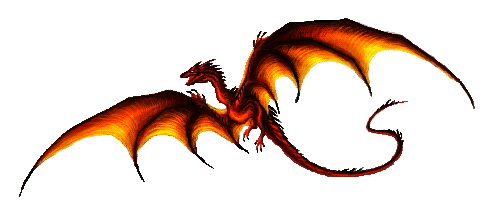
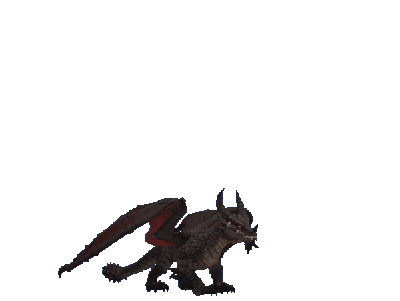
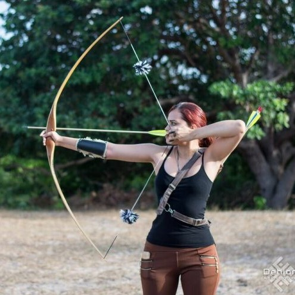

My cousin is out fighting dragons, and what do I get? Programming duty.
Olá viajante! Meu nome é Taina, sou estudante de Engenharia de Software e Analista de Desenvolvimento de Sistemas. Nas horas vagas gosto de jogar e faço alguns trabalhos para a Dark Brotherhood em Skyrim.
No momento fui chamada para uma missão em um reino distante, mas você pode me encontrar aqui ou mandar seu mensageiro!

"I used to be an adventurer like you, then I took a Javascript in the knee"
Sou formada em Oceanografia pela Universidade Federal do Maranhão (UFMA), mas em 2022 fiz transição de carreira e hoje atuo como Analista de Desenvolvimento de Sistemas, tendo realizado um curso de longa duração em Web Full Stack pela Ada Tech. Hoje faço minha segunda graduação na UNINTER, onde curso Engenharia de Software
Magias que aprendi até agora:


Idiomas falados: Portguês (nativo), Inglês (avançado), Italiano (avançado) e Espanhol (básico).
Para conhecer mais sobre o meu trabalho, você pode acessar meu Github clicando aqui.
Indico dar uma olhada especial nos seguintes projetos:
Para me encontrar ou enviar seu mensageiro:
Você também pode dar uma olhada nas minhas redes: